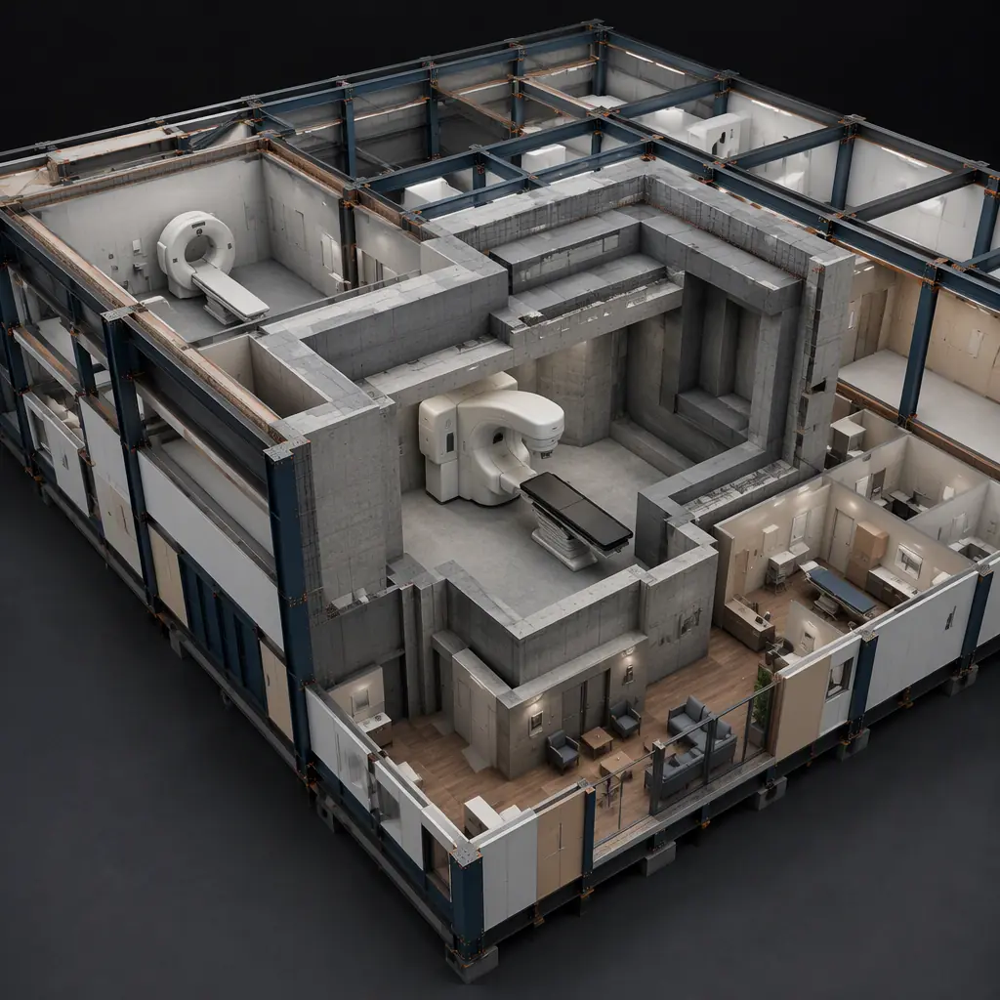

Radiation therapy is one of the highest-value and most technically demanding building programs in healthcare. Over 1.9 million new cancer cases are diagnosed in the US every year, and roughly 60% of cancer patients receive radiation therapy at some point in their treatment — yet the infrastructure to deliver it is severely constrained. Linear accelerators (LINACs), the machines that deliver external beam radiation, must be housed in vaults with 4–8 ft of radiation-shielding concrete, and the typical LINAC vault project runs 18–24 months, often on hospital campuses where construction disrupts an operating facility. The result is a national shortfall of treatment capacity that delays care for weeks. Modular prefabricated construction manufactures LINAC vaults and oncology support spaces as factory-built steel-and-concrete modules with engineered radiation shielding — compressed to 9–12 months from design to first patient, with a 20–30% building cost reduction. The same concurrent-production model that accelerates modular diagnostic imaging and radiology center construction applies at radiation therapy scale.
Why Radiation Therapy Facilities Are the Hardest Medical Build
Radiation oncology buildings combine the most demanding structural requirements in medicine with the operational reality of an active cancer center:
- Radiation shielding is a structural discipline. A LINAC vault requires 4–8 ft of high-density concrete (150–200 lb/ft³) in walls, ceiling, and maze entrance to attenuate megavoltage beams to NCRP Report 151 exposure limits. The maze design — the shielded entry corridor that prevents direct beam scatter to the door — is geometry-critical, and the equipment room door alone can weigh 10,000–20,000 lb. Factory-built vault modules are cast and tested off-site, with the shielding design documented by a medical physicist, compressing a structural discipline that conventionally adds 4–6 months of field work. The concrete-heavy construction parallels modular hospital construction.
- Imaging integration is exacting. Modern radiation therapy is image-guided: CT simulators, cone-beam CT on the LINAC, and MRI-guided systems (MR-linacs) require the vault to be sized and shielded for both radiation and imaging fields, with vibration and magnetic interference controlled. Factory fabrication allows the imaging equipment layout, shielding penetrations, and conduit runs to be coordinated and tested before shipment — the integration discipline we document for modular imaging and radiology centers.
- Operating hospitals cannot pause. Most radiation therapy capacity is added to operating hospital campuses, where demolition, excavation, and concrete placement for a vault disrupts clinical operations and parking. Modular vaults are manufactured off-site, delivered, and set in days — a delivery model that stick-built construction cannot match on an active campus. The active-facility expansion approach is covered in our guide to modular hospital expansion.
- Regulatory approval gates the schedule. Vault design must satisfy state radiation control programs, The Joint Commission standards, and often the equipment manufacturer's shielding specifications, with a licensed medical physicist signing off. Factory-documented fabrication — the same discipline behind modular factory QC systems — gives regulators a complete, auditable shielding record.

What Gets Factory-Built — The Oncology Module Package
The modular radiation therapy center divides into functional modules that can be manufactured, tested, and shipped independently, then combined on site:
LINAC Vault Modules
The treatment vault — typically 800–1,200 sq ft of shielded space with 10–12 ft ceilings — is delivered as a concrete-shielded module or module assembly, with the maze, beam-blocking geometry, and door frame engineered and cast at the factory. The vault arrives with the LINAC foundation embedments, cable trenches, and equipment penetrations pre-planned, ready for the equipment vendor's installation. A conventional vault build takes 8–12 months on site; factory production compresses that to 3–4 months, with the vault arriving finished and ready for equipment. The equipment-integration pattern parallels modular imaging center construction.
CT Simulator and Imaging Modules
CT simulation is the planning step for every radiation treatment course, so the simulator suite — CT room with its own (lighter) shielding, control room, and patient prep space — is a separate module. It arrives with the CT foundation, power conditioning, and imaging-network infrastructure pre-installed. The imaging-room discipline follows our radiology center guide.
Exam, Consult, and Patient Support Modules
Oncology centers pair treatment capacity with a full outpatient program: exam rooms, physician consult offices, chemotherapy infusion bays, patient education space, and waiting areas. These arrive as finished modules with medical gas, nurse call, and HVAC pre-installed — the same outpatient clinical package we document in modular medical clinic and outpatient construction.
Physics, QA, and Support Spaces
Medical physics offices, dosimetry workstations, and the QA equipment room complete the package. These modules arrive with the specialized power, cooling, and data infrastructure that physics and QA equipment require, compressing the specialized field work that conventionally extends oncology schedules by 2–4 months. The technical-systems density parallels modular biotech and life sciences facilities.
Shielding Design — The Physics That Makes Modular Vaults Work
The question every health system asks is whether a factory-built vault can meet medical physics standards. The answer is that modular vaults are engineered to the same NCRP Report 151 and AAPM TG-51/TG-142 standards as cast-in-place vaults, with three advantages unique to factory production:
- Controlled concrete quality. High-density concrete (often 150–200 lb/ft³ with hematite or magnetite aggregate) is batched, placed, and tested under factory QC, with cylinder tests documented per batch — eliminating the field-concrete variability that can delay a cast-in-place vault while density is verified.
- Penetration coordination. Every conduit, duct, and equipment penetration through the shielded envelope is coordinated at design stage and cast or cored at the factory, with offset shielding details engineered by the medical physicist — no field "discovery" penetrations that compromise shielding.
- Third-party verification. The complete shielding design package — barrier calculations, maze geometry, door specifications, and penetration details — is documented for the physicist's sign-off and the state radiation control program's review, before the module ships.
This physics-first approach is the same engineering rigor we bring to modular cleanroom and controlled-environment facilities.
Delivery Models — Campus, Freestanding, and Relocatable
Radiation therapy capacity is added through three distinct delivery models, and modular construction fits each:
- Hospital campus expansion. Adding a vault to an operating hospital is the highest-disruption program in healthcare construction. Modular vaults are set in days with minimal campus disruption, and the oncology modules connect to existing utilities over a short window — the active-campus model documented in modular hospital expansion.
- Freestanding cancer centers. The fastest-growing model is the freestanding center — one or two LINACs plus imaging, infusion, and clinic space on an outpatient site. The entire center delivers as a module package over 9–12 months, versus 18–24 months conventionally, letting health systems capture patients earlier in growing suburban markets. The outpatient-center economics follow our community health center analysis.
- Relocatable and interim capacity. Health systems facing multi-year vault construction programs increasingly deploy relocatable shielded modules as interim capacity — treating patients while the permanent facility is built, then relocating the module to a second site. The relocatable-building experience from modular temporary and relocatable facilities applies directly.
Compliance — NCRP, State Radiation Control, and Joint Commission
Radiation therapy facilities operate under NCRP Report 151 for shielding design, state radiation control program registration and inspection, The Joint Commission's Environment of Care standards, and equipment manufacturer installation specifications. Modular delivery supports compliance by enabling factory-documented fabrication — barrier calculations and maze geometry engineered by a licensed medical physicist, penetration details documented, and the full shielding record delivered for state review. The compliance documentation approach parallels what we document for permitting and zoning in healthcare construction.
Cost Structure — Modular vs. Conventional Oncology Build
| Cost Category | Conventional (12,000 sq ft Center) | Modular (12,000 sq ft Center) |
|---|---|---|
| LINAC vault (shielded module) | $2.2–3.5M | $1.7–2.7M (factory-cast) |
| CT simulator suite | $0.9–1.5M | $0.7–1.2M (factory-built) |
| Exam, consult & infusion modules | $1.6–2.6M | $1.2–2.0M (pre-installed systems) |
| Physics, QA & support spaces | $0.7–1.2M | $0.55–0.95M (factory-integrated) |
| Field labor, logistics & campus disruption | $1.0–1.8M | $0.4–0.8M |
| Total Building Cost | $6.4–10.6M | $4.55–7.65M |
The 20–30% building cost reduction compounds with 6–12 months of earlier treatment capacity — material for a health system where every month of delay means patients referred out to competitors and revenue lost. For a full treatment of modular project economics, see our 2026 modular cost guide and our developer's ROI analysis.
Multi-Vault Rollout — Building a Network of Treatment Capacity
Large health systems and oncology groups are rolling out multi-site radiation therapy networks — a flagship center plus two to five satellite centers in growing markets. Network rollout is where modular delivery compounds its advantage: the first center establishes the vault module design, shielding documentation package, and commissioning procedures, and every subsequent center reuses them, cutting design time per site by 50–70% and standardizing the LINAC integration, physics review, and staff training across the network. Systems can also phase capacity — deploying a single LINAC now and adding a second vault or imaging module as patient volumes grow — matching capital deployment to actual demand. This standardization benefit is the same one we document for modular ROI analysis of multi-site programs, and the financing options in our modular construction lending guide apply directly to capital-intensive oncology programs.
Technology Trends — SBRT, MR-Linac & the Next-Generation Vault
Radiation oncology technology is evolving faster than the buildings that house it, and the modular delivery model is uniquely positioned for the shift. Stereotactic body radiation therapy (SBRT) and stereotactic radiosurgery (SRS) deliver ablative doses in one to five fractions, which shortens treatment courses but raises the demands on the vault — higher dose rates mean more rigorous shielding analysis, and the smaller, faster machines are increasingly installed in community centers rather than academic campuses. MR-guided systems (MR-linacs) pair the LINAC with a magnetic resonance imager, adding magnetic interference, radiofrequency shielding, and vibration control to the vault program. And the emerging interest in FLASH therapy and compact proton systems points toward a future of denser, more specialized treatment rooms. Modular vaults track this curve the same way modular data centers track server technology: the building shell, shielding envelope, and equipment infrastructure are designed to accept a defined machine footprint, so a center can install a current-generation LINAC now and swap or upgrade the equipment inside the same validated vault later. For health systems planning capacity five to ten years out, this future-proofing is worth as much as the schedule saving.
Is Modular Right for Your Oncology Project?
Modular radiation therapy delivery delivers the strongest value for freestanding centers where speed-to-revenue is the business case, campus expansions where disruption to an operating hospital must be minimized, multi-site networks where production-line repeatability cuts design cost per vault, and systems needing interim relocatable capacity while a permanent facility is built. For flagship academic centers with proton therapy and complex research programs, a hybrid approach — modular LINAC and clinical modules with conventional proton vault construction — delivers most of the schedule and quality benefits while preserving flexibility for the largest machines. For health systems building treatment capacity, modular delivery converts the radiation therapy building program from a two-year project into a nine-month program — consistent with the modular hospital and modular healthcare facilities programs we document elsewhere.